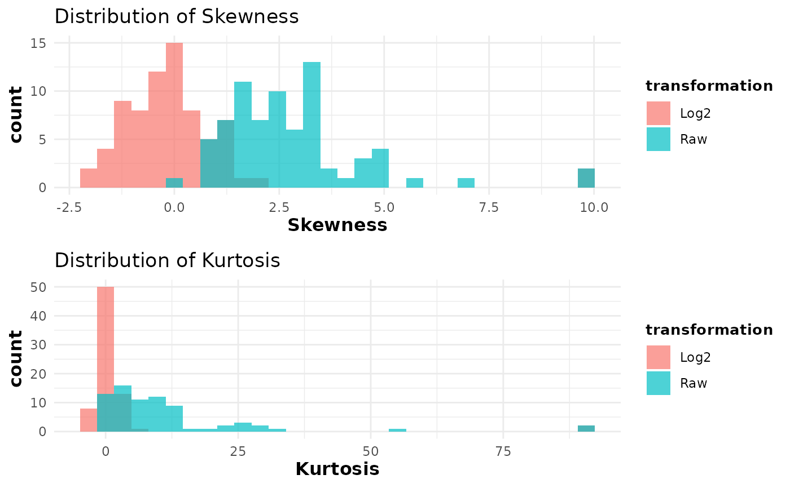
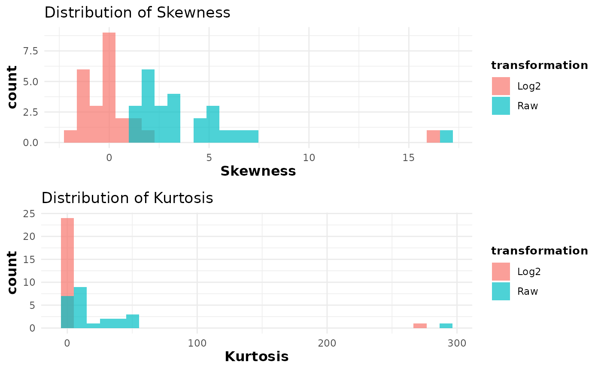

This function computes summary statistics — including sample
size, mean, standard error, skewness, and kurtosis — for each numeric
measurement column in a data set. If grouping columns are provided via
group_cols, the function computes the metrics separately for each group
defined by the combination of these columns (using the first element as
the treatment variable and the second as the grouping variable, or
the same column for both if only one is given). When no grouping columns
are provided, the entire data set is treated as a single group ("Overall").
A log2 transformation (using a cutoff equal to one-tenth of the smallest
positive value in the data) is applied to generate alternative metrics.
Histograms showing the distribution of skewness and kurtosis for both raw
and log2-transformed data are then generated and saved to a PDF if a file
name is provided.
Usage
cyt_skku(
data,
group_cols = NULL,
pdf_title = NULL,
print_res_raw = FALSE,
print_res_log = FALSE
)Arguments
- data
A matrix or data frame containing the raw data. If
group_colsis specified, the columns with names ingroup_colsare treated as grouping variables and all other columns are assumed to be numeric measurement variables.- group_cols
A character vector specifying the names of the grouping columns. When provided, the first element is treated as the treatment variable and the second as the group variable. If not provided, the entire data set is treated as one group.
- pdf_title
A character string specifying the file name for the PDF file in which the histograms will be saved. If
NULL, the histograms are displayed on the current graphics device. Default isNULL.- print_res_raw
Logical. If
TRUE, the function returns and prints the computed summary statistics for the raw data. Default isFALSE.- print_res_log
Logical. If
TRUE, the function returns and prints the computed summary statistics for the log2-transformed data. Default isFALSE.
Value
The function generates histograms of skewness and kurtosis for both
raw and log2-transformed data. Additionally, if either
printResRaw and/or printResLog is TRUE, the function
returns the corresponding summary statistics as a data frame or a list of
data frames.
Details
A cutoff is computed as one-tenth of the minimum positive value among all numeric measurement columns to avoid taking logarithms of zero. When grouping columns are provided, the function loops over unique grouping columns and computes the metrics for each measurement column within each subgroup. Without grouping columns, the entire data set is analyzed as one overall group.
Examples
# Example with grouping columns (e.g., "Group" and "Treatment")
data(ExampleData1)
cyt_skku(ExampleData1[, -c(2:3)], pdf_title = NULL,
group_cols = c("Group")
)
#> Warning: Removed 2 rows containing non-finite outside the scale range (`stat_bin()`).
#> Warning: Removed 2 rows containing non-finite outside the scale range (`stat_bin()`).

# Example without grouping columns (analyzes the entire data set)
cyt_skku(ExampleData1[, -c(1:3)], pdf_title = NULL)
